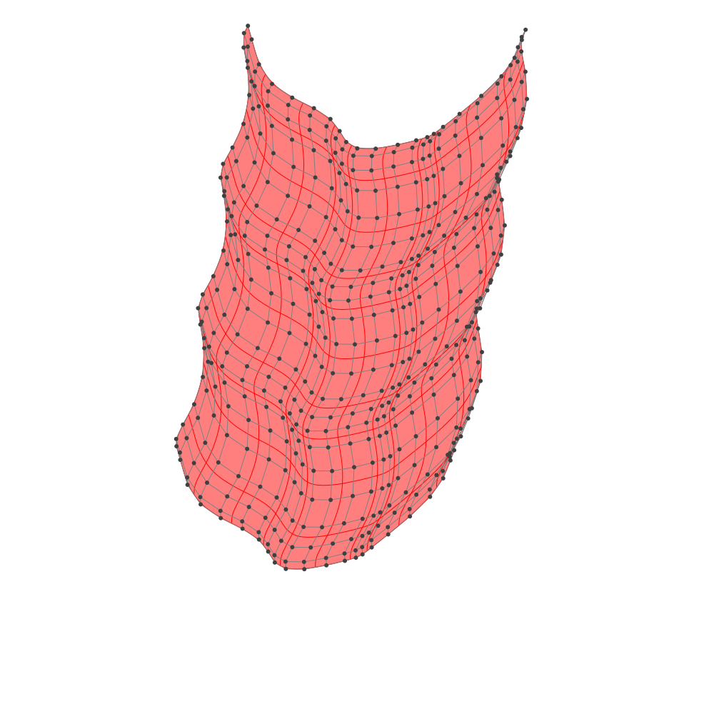
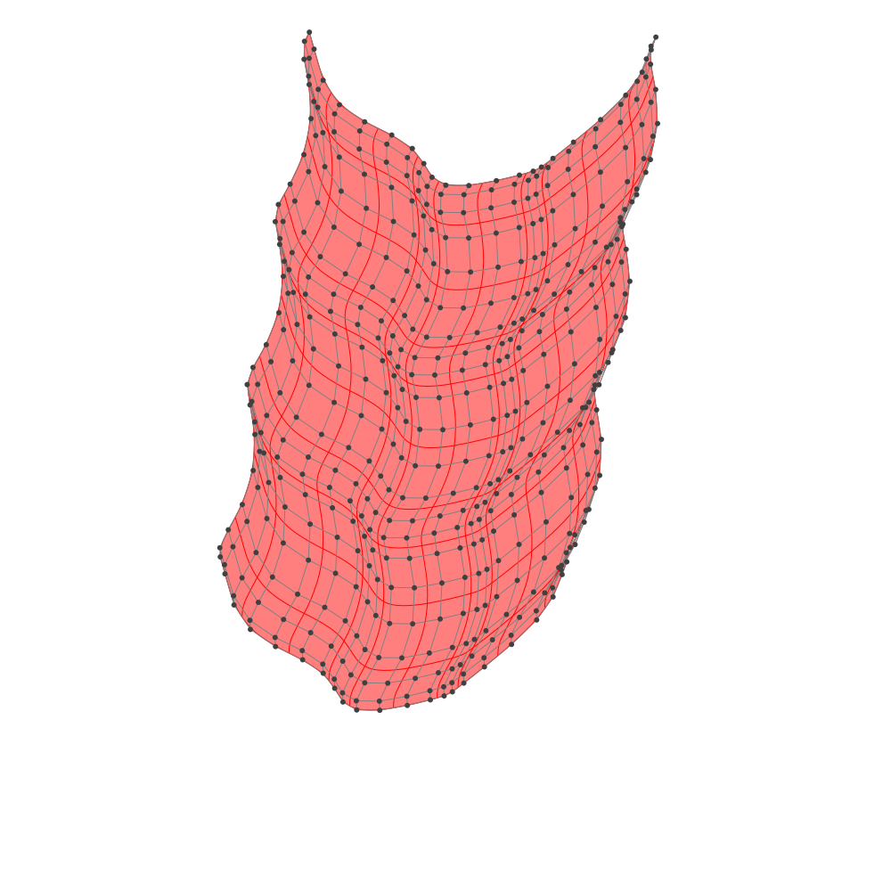

Mathematical properties of B-spline
Introduction
B-spline is a mathematical object, and it has a lot of application. (e.g. NURBS, IGA)
In this page, we'll explain the mathematical definition and property of B-spline with Julia code. Before running the following code, you need to import the package:
using BasicBSplineNotice
- A book "Geometric Modeling with Splines" by Elaine Cohen, Richard F. Riesenfeld, Gershon Elber is really recommended.
- Some of notations in this page are our original, but these are well-considered results.
Knot vector
A finite sequence
\[k = (k_1, \dots, k_l)\]
is called knot vector if the sequence is broad monotonic increase, i.e. $k_{i} \le k_{i+1}$.
[TODO: fig]
BasicBSpline.KnotVector — TypeConstruct knot vector from given array.
\[k=(k_1,\dots,k_l)\]
Examples
julia> k = KnotVector([1,2,3])
KnotVector([1.0, 2.0, 3.0])
julia> k = KnotVector(1:3)
KnotVector([1.0, 2.0, 3.0])BasicBSpline.KnotVector — MethodConstruct knot vector from given real numbers.
Examples
julia> k = KnotVector(1,2,3)
KnotVector([1.0, 2.0, 3.0])
julia> k = KnotVector()
KnotVector([])Base.length — MethodLength of knot vector
\[\begin{aligned} \#{k} &=(\text{number of knot elements of} \ k) \\ \end{aligned}\]
For example, $\#{(1,2,2,3)}=4$.
Examples
julia> k = KnotVector(1,2,2,3);
julia> length(k)
4Although a knot vector is not a vector in linear algebra, but we introduce additional operator $+$.
Base.:+ — MethodSum of knot vectors
\[\begin{aligned} k^{(1)}+k^{(2)} &=(k^{(1)}_1, \dots, k^{(1)}_{l^{(1)}}) + (k^{(2)}_1, \dots, k^{(2)}_{l^{(2)}}) \\ &=(\text{sort of union of} \ k^{(1)} \ \text{and} \ k^{(2)} \text{)} \end{aligned}\]
For example, $(1,2,3,5)+(4,5,8)=(1,2,3,4,5,5,8)$.
Examples
julia> k1 = KnotVector(1,2,3,5);
julia> k2 = KnotVector(4,5,8);
julia> k1 + k2
KnotVector([1.0, 2.0, 3.0, 4.0, 5.0, 5.0, 8.0])Note that the operator +(::KnotVector, ::KnotVector) is commutative. This is why we choose the $+$ sign. We also introduce product operator $\cdot$ for knotvector.
Base.:* — MethodProduct of integer and knot vector
\[\begin{aligned} m\cdot k&=\underbrace{k+\cdots+k}_{m} \end{aligned}\]
For example, $2\cdot (1,2,2,5)=(1,1,2,2,2,2,5,5)$.
Examples
julia> k = KnotVector(1,2,2,5);
julia> 2 * k
KnotVector([1.0, 1.0, 2.0, 2.0, 2.0, 2.0, 5.0, 5.0])Inclusive relationship between knotvectors.
Base.issubset — MethodCheck a inclusive relationship $k\subseteq k'$, for example:
\[\begin{aligned} (1,2) &\subseteq (1,2,3) \\ (1,2,2) &\not\subseteq (1,2,3) \\ (1,2,3) &\subseteq (1,2,3) \\ \end{aligned}\]
Examples
julia> KnotVector(1,2) ⊆ KnotVector(1,2,3)
true
julia> KnotVector(1,2,2) ⊆ KnotVector(1,2,3)
false
julia> KnotVector(1,2,3) ⊆ KnotVector(1,2,3)
trueBase.unique — MethodUnique elements of knot vector.
\[\begin{aligned} \widehat{k} &=(\text{unique knot elements of} \ k) \\ \end{aligned}\]
For example, $\widehat{(1,2,2,3)}=(1,2,3)$.
Examples
julia> k = KnotVector([1,2,2,3]);
julia> unique(k)
KnotVector([1.0, 2.0, 3.0])BasicBSpline.countknots — MethodFor given knot vector $k$, the following function $\mathfrak{n}_k:\mathbb{R}\to\mathbb{Z}$ represents the number of knots that duplicate the knot vector $k$.
\[\mathfrak{n}_k(t) = \sharp\{i \mid k_i=t \}\]
For example, if $k=(1,2,2,3)$, then $\mathfrak{n}_k(0.3)=0$, $\mathfrak{n}_k(1)=1$, $\mathfrak{n}_k(2)=2$.
julia> k = KnotVector([1,2,2,3]);
julia> countknots(k,0.3)
0
julia> countknots(k,1.0)
1
julia> countknots(k,2.0)
2B-spline space
Before defining B-spline space, we'll define polynomial space with degree $p$.
Polynomial space with degree $p$.
\[\mathcal{P}[p] =\left\{f:\mathbb{R}\to\mathbb{R}\ ;\ t\mapsto a_0+a_1t^1+\cdots+a_pt^p \ \left| \ % a_i\in \mathbb{R} \right. \right\}\]
This space $\mathcal{P}[p]$ is a $(p+1)$-dimensional linear space.
Note that $\{t\mapsto t^i\}_{0 \le i \le p}$ is a basis of $\mathcal{P}[p]$, and also the set of Bernstein polynomial $\{B_{(i,p)}\}_i$ is a basis of $\mathcal{P}[p]$.
\[\begin{aligned} B_{(i,p)}(t) &=\binom{p}{i-1}t^{i-1}(1-t)^{p-i+1} &(i=1, \dots, p+1) \end{aligned}\]
Where $\binom{p}{i-1}$ is a binomial coefficient.
For given polynomial degree $p\ge 0$ and knot vector $k=(k_1,\dots,k_l)$, B-spline space $\mathcal{P}[p,k]$ is defined as follows:
\[\mathcal{P}[p,k] =\left\{f:\mathbb{R}\to\mathbb{R} \ \left| \ % \begin{gathered} \operatorname{supp}(f)\subseteq [k_1, k_l] \\ \exists \tilde{f}\in\mathcal{P}[p], f|_{[k_{i}, k_{i+1})} = \tilde{f}|_{[k_{i}, k_{i+1})} \\ \forall t \in \mathbb{R}, \exists \delta > 0, f|_{(t-\delta,t+\delta)}\in C^{p-\mathfrak{n}_k(t)} \end{gathered} \right. \right\}\]
Note that each element of the space $\mathcal{P}[p,k]$ is a piecewise polynomial.
[TODO: fig]
julia> p = 22julia> k = KnotVector([1,3,5,6,8,9])KnotVector([1.0, 3.0, 5.0, 6.0, 8.0, 9.0])julia> BSplineSpace{p}(k)BSplineSpace{2, Float64}(KnotVector([1.0, 3.0, 5.0, 6.0, 8.0, 9.0]))
A B-spline space is said to be non-degenerate if its degree and knotvector satisfies following property:
\[\begin{aligned} k_{i}&<k_{i+p+1} & (1 \le i \le l-p-1) \end{aligned}\]
BasicBSpline.isnondegenerate — FunctionCheck if given B-spline space is non-degenerate.
Examples
julia> isnondegenerate(BSplineSpace{2}(KnotVector([1,3,5,6,8,9])))
true
julia> isnondegenerate(BSplineSpace{1}(KnotVector([1,3,3,3,8,9])))
falseThe B-spline space is a linear space, and if a B-spline space is non-degenerate, its dimension is calculated by:
\[\dim(\mathcal{P}[p,k])=\sharp k - p -1\]
julia> dim(BSplineSpace{2}(KnotVector([1,3,5,6,8,9])))3
BasicBSpline.dim — FunctionReturn dimention of a B-spline space.
\[\dim(\mathcal{P}[p,k]) =\sharp k - p -1\]
B-spline basis function
B-spline basis function is defined by Cox–de Boor recursion formula.
\[\begin{aligned} {B}_{(i,p,k)}(t) &= \frac{t-k_{i}}{k_{i+p}-k_{i}}{B}_{(i,p-1,k)}(t) +\frac{k_{i+p+1}-t}{k_{i+p+1}-k_{i+1}}{B}_{(i+1,p-1,k)}(t) \\ {B}_{(i,0,k)}(t) &= \begin{cases} &1\quad (k_{i}\le t< k_{i+1})\\ &0\quad (\text{otherwise}) \end{cases} \end{aligned}\]
If the denominator is zero, then the term is assumed to be zero.
The set of functions $\{B_{(i,p,k)}\}_i$ is a basis of B-spline space $\mathcal{P}[p,k]$.
julia> using Plotsjulia> p = 22julia> k = KnotVector(1:8)KnotVector([1.0, 2.0, 3.0, 4.0, 5.0, 6.0, 7.0, 8.0])julia> P = BSplineSpace{p}(k)BSplineSpace{2, Float64}(KnotVector([1.0, 2.0, 3.0, 4.0, 5.0, 6.0, 7.0, 8.0]))julia> plot([t->bsplinebasis₊₀(P,i,t) for i in 1:dim(P)], 1, 8, ylims=(0,1), label=false)Plot{Plots.PlotlyJSBackend() n=5}

You can choose the first terms in different ways.
\[\begin{aligned} {B}_{(i,0,k)}(t) &= \begin{cases} &1\quad (k_{i} < t \le k_{i+1}) \\ &0\quad (\text{otherwise}) \end{cases} \end{aligned}\]
julia> using Plotsjulia> p = 22julia> k = KnotVector(1:8)KnotVector([1.0, 2.0, 3.0, 4.0, 5.0, 6.0, 7.0, 8.0])julia> P = BSplineSpace{p}(k)BSplineSpace{2, Float64}(KnotVector([1.0, 2.0, 3.0, 4.0, 5.0, 6.0, 7.0, 8.0]))julia> plot([t->bsplinebasis₋₀(P,i,t) for i in 1:dim(P)], 1, 8, ylims=(0,1), label=false)Plot{Plots.PlotlyJSBackend() n=5}

In these cases, each B-spline basis function $B_{(i,2,k)}$ is coninuous, so bsplinebasis₊₀ and bsplinebasis₋₀ are equal.
Support of B-spline basis function
If a B-spline space$\mathcal{P}[p,k]$ is non-degenerate, the support of its basis function is calculated as follows:
\[\operatorname{supp}(B_{(i,p,k)})=[k_{i},k_{i+p+1}]\]
[TODO: fig]
julia> i = 22julia> k = KnotVector([5,12,13,13,14])KnotVector([5.0, 12.0, 13.0, 13.0, 14.0])julia> p = 22julia> P = BSplineSpace{p}(k)BSplineSpace{2, Float64}(KnotVector([5.0, 12.0, 13.0, 13.0, 14.0]))julia> bsplinesupport(P) # [5..13, 12..14]ERROR: MethodError: no method matching bsplinesupport(::BSplineSpace{2, Float64}) Closest candidates are: bsplinesupport(::AbstractBSplineSpace, !Matched::Integer) at ~/work/BasicBSpline.jl/BasicBSpline.jl/src/_BSplineSpace.jl:190julia> bsplinesupport(P,i) # 12..1412.0..14.0
Derivative of B-spline basis function
The derivative of B-spline basis function can be expressed as follows:
\[\begin{aligned} \dot{B}_{(i,p,k)}(t) &=\frac{d}{dt}B_{(i,p,k)}(t) \\ &=p\left(\frac{1}{k_{i+p}-k_{i}}B_{(i,p-1,k)}(t)-\frac{1}{k_{i+p+1}-k_{i+1}}B_{(i+1,p-1,k)}(t)\right) \end{aligned}\]
Note that $\dot{B}_{(i,p,k)}\in\mathcal{P}[p-1,k]$.
julia> using Plotsjulia> p = 22julia> k = KnotVector(1:8)KnotVector([1.0, 2.0, 3.0, 4.0, 5.0, 6.0, 7.0, 8.0])julia> P = BSplineSpace{p}(k)BSplineSpace{2, Float64}(KnotVector([1.0, 2.0, 3.0, 4.0, 5.0, 6.0, 7.0, 8.0]))julia> plot([t->bsplinebasis′₊₀(P,i,t) for i in 1:dim(P)], 1, 8, ylims=(-2,2), label=false)Plot{Plots.PlotlyJSBackend() n=5}

Partition of unity
\[\begin{aligned} \sum_{i}B_{(i,p,k)}(t) &= 1 & (k_{p+1} \le t < k_{l-p}) \\ 0 \le B_{(i,p,k)}(t) &\le 1 \end{aligned}\]
julia> using Plotsjulia> p = 22julia> k = KnotVector(1:8)KnotVector([1.0, 2.0, 3.0, 4.0, 5.0, 6.0, 7.0, 8.0])julia> P = BSplineSpace{p}(k)BSplineSpace{2, Float64}(KnotVector([1.0, 2.0, 3.0, 4.0, 5.0, 6.0, 7.0, 8.0]))julia> plot(t->sum(bsplinebasis₊₀(P,i,t) for i in 1:dim(P)), 1, 8, ylims=(0,1.1), label=false)Plot{Plots.PlotlyJSBackend() n=1}

To satisfy the partition of unity on whole interval $[1,8]$, sometimes more knots will be inserted to the endpoints of the interval.
julia> using Plotsjulia> p = 22julia> k = KnotVector(1:8) + p * KnotVector([1,8])KnotVector([1.0, 1.0, 1.0, 2.0, 3.0, 4.0, 5.0, 6.0, 7.0, 8.0, 8.0, 8.0])julia> P = BSplineSpace{p}(k)BSplineSpace{2, Float64}(KnotVector([1.0, 1.0, 1.0, 2.0, 3.0, 4.0, 5.0, 6.0, 7.0, 8.0, 8.0, 8.0]))julia> plot(t->sum(bsplinebasis₊₀(P,i,t) for i in 1:dim(P)), 1, 8, ylims=(0,1.1), label=false)Plot{Plots.PlotlyJSBackend() n=1}

But, the sum $\sum_{i} B_{(i,p,k)}(t)$ is not equal to $1$ if $t=8$. Therefore, to satisfy partition of unity on closed interval $[k_{p+1}, k_{l-p}]$, the definition of first terms of B-spline basis functions are sometimes replaced:
\[\begin{aligned} {B}_{(i,0,k)}(t) &= \begin{cases} &1\quad (k_{i} \le t<k_{i+1})\\ &1\quad (k_{i} < t = k_{i+1}=k_{l})\\ &0\quad (\text{otherwise}) \end{cases} \end{aligned}\]
julia> using Plotsjulia> p = 22julia> k = KnotVector(1:8) + p * KnotVector([1,8])KnotVector([1.0, 1.0, 1.0, 2.0, 3.0, 4.0, 5.0, 6.0, 7.0, 8.0, 8.0, 8.0])julia> P = BSplineSpace{p}(k)BSplineSpace{2, Float64}(KnotVector([1.0, 1.0, 1.0, 2.0, 3.0, 4.0, 5.0, 6.0, 7.0, 8.0, 8.0, 8.0]))julia> plot(t->sum(bsplinebasis(P,i,t) for i in 1:dim(P)), 1, 8, ylims=(0,1.1), label=false)Plot{Plots.PlotlyJSBackend() n=1}

Inclusive relation between B-spline spaces
For non-degenerate B-spline spaces, the following relationship holds.
\[\mathcal{P}[p,k] \subseteq \mathcal{P}[p',k'] \Leftrightarrow (m=p'-p \ge 0 \ \text{and} \ k+m\widehat{k}\subseteq k')\]
(as linear subspace..)
julia> P1 = BSplineSpace{1}(KnotVector([1,3,5,8]))BSplineSpace{1, Float64}(KnotVector([1.0, 3.0, 5.0, 8.0]))julia> P2 = BSplineSpace{1}(KnotVector([1,3,5,6,8,9]))BSplineSpace{1, Float64}(KnotVector([1.0, 3.0, 5.0, 6.0, 8.0, 9.0]))julia> P3 = BSplineSpace{2}(KnotVector([1,1,3,3,5,5,8,8]))BSplineSpace{2, Float64}(KnotVector([1.0, 1.0, 3.0, 3.0, 5.0, 5.0, 8.0, 8.0]))julia> P1 ⊆ P2 # truetruejulia> P1 ⊆ P3 # truetruejulia> P2 ⊆ P3 # falsefalsejulia> P2 ⊈ P3 # truetrue
Here are plots of the B-spline basis functions of the spaces P1, P2, P3.
julia> using Plotsjulia> P1 = BSplineSpace{1}(KnotVector([1,3,5,8]))BSplineSpace{1, Float64}(KnotVector([1.0, 3.0, 5.0, 8.0]))julia> P2 = BSplineSpace{1}(KnotVector([1,3,5,6,8,9]))BSplineSpace{1, Float64}(KnotVector([1.0, 3.0, 5.0, 6.0, 8.0, 9.0]))julia> P3 = BSplineSpace{2}(KnotVector([1,1,3,3,5,5,8,8]))BSplineSpace{2, Float64}(KnotVector([1.0, 1.0, 3.0, 3.0, 5.0, 5.0, 8.0, 8.0]))julia> plot( plot([t->bsplinebasis₊₀(P1,i,t) for i in 1:dim(P1)], 1, 9, ylims=(0,1), legend=false), plot([t->bsplinebasis₊₀(P2,i,t) for i in 1:dim(P2)], 1, 9, ylims=(0,1), legend=false), plot([t->bsplinebasis₊₀(P3,i,t) for i in 1:dim(P3)], 1, 9, ylims=(0,1), legend=false), layout=(3,1), link=:x )Plot{Plots.PlotlyJSBackend() n=11}

This means, there exists a $n \times n'$ matrix $A$ which holds:
\[\begin{aligned} B_{(i,p,k)} &=\sum_{j}A_{ij} B_{(j,p',k')} \\ n&=\dim(\mathcal{P}[p,k]) \\ n'&=\dim(\mathcal{P}[p',k']) \end{aligned}\]
You can calculate the change of basis matrix $A$ with changebasis.
julia> A12 = changebasis(P1,P2)2×4 Matrix{Float64}: 1.0 0.0 0.0 -0.0 0.0 1.0 0.666667 -0.0julia> A13 = changebasis(P1,P3)2×5 Matrix{Float64}: 0.5 1.0 0.5 0.0 -0.0 0.0 0.0 0.5 1.0 0.5
julia> using Plotsjulia> plot( plot([t->bsplinebasis₊₀(P1,i,t) for i in 1:dim(P1)], 1, 9, ylims=(0,1), legend=false), plot([t->sum(A12[i,j]*bsplinebasis₊₀(P2,j,t) for j in 1:dim(P2)) for i in 1:dim(P1)], 1, 9, ylims=(0,1), legend=false), plot([t->sum(A13[i,j]*bsplinebasis₊₀(P3,j,t) for j in 1:dim(P3)) for i in 1:dim(P1)], 1, 9, ylims=(0,1), legend=false), layout=(3,1), link=:x )Plot{Plots.PlotlyJSBackend() n=6}

Multi-dimensional B-spline
tensor product
\[B_{i^1,\dots,i^d}(t^1,\dots,t^d) =B_{(i^1,p^1,k^1)}(t^1)\cdots B_{(i^d,p^d,k^d)}(t^d)\]
B-spline manifold
B-spline manifold is a parametric representation of a shape.
For given $d$-dimensional B-spline basis functions $B_{i^1,\dots,i^d}$ and given points $\bm{a}_{i^1,\dots,i^d} \in \mathbb{R}^{\hat{d}}$, B-spline manifold is defined by following equality:
\[\bm{p}(t^1,\dots,t^d;\bm{a}_{i^1,\dots,i^d}) =\sum_{i^1,\dots,i^d}B_{i^1,\dots,i^d}(t^1,\dots,t^d) \bm{a}_{i^1,\dots,i^d}\]
Where $\bm{a}_{i^1,\dots,i^d}$ are called control points.
We will also write $\bm{p}(t^1,\dots,t^d; \bm{a})$, $\bm{p}(t^1,\dots,t^d)$, $\bm{p}(t; \bm{a})$ or $\bm{p}(t)$ for simplicity.
julia> P1 = BSplineSpace{1}(KnotVector([0,0,1,1]))BSplineSpace{1, Float64}(KnotVector([0.0, 0.0, 1.0, 1.0]))julia> P2 = BSplineSpace{1}(KnotVector([1,1,2,3,3]))BSplineSpace{1, Float64}(KnotVector([1.0, 1.0, 2.0, 3.0, 3.0]))julia> n1 = dim(P1) # 22julia> n2 = dim(P2) # 33julia> a = [SVector(i, j) for i in 1:n1, j in 1:n2] # n1 × n2 array of d̂ array.2×3 Matrix{StaticArrays.SVector{2, Int64}}: [1, 1] [1, 2] [1, 3] [2, 1] [2, 2] [2, 3]julia> M = BSplineManifold(a, (P1, P2))BSplineManifold{2, (1, 1), StaticArrays.SVector{2, Int64}, Tuple{BSplineSpace{1, Float64}, BSplineSpace{1, Float64}}}((BSplineSpace{1, Float64}(KnotVector([0.0, 0.0, 1.0, 1.0])), BSplineSpace{1, Float64}(KnotVector([1.0, 1.0, 2.0, 3.0, 3.0]))), StaticArrays.SVector{2, Int64}[[1, 1] [1, 2] [1, 3]; [2, 1] [2, 2] [2, 3]])
B-spline curve
julia> ## 1-dim B-spline manifold p = 2 # degree of polynomial2julia> k = KnotVector(1:12) # knot vectorKnotVector([1.0, 2.0, 3.0, 4.0, 5.0, 6.0, 7.0, 8.0, 9.0, 10.0, 11.0, 12.0])julia> P = BSplineSpace{p}(k) # B-spline spaceBSplineSpace{2, Float64}(KnotVector([1.0, 2.0, 3.0, 4.0, 5.0, 6.0, 7.0, 8.0, 9.0, 10.0, 11.0, 12.0]))julia> a = [SVector(i-5, 3*sin(i^2)) for i in 1:dim(P)] # control points9-element Vector{StaticArrays.SVector{2, Float64}}: [-4.0, 2.5244129544236893] [-3.0, -2.2704074859237844] [-2.0, 1.2363554557252698] [-1.0, -0.8637099499951959] [0.0, -0.3970552502933191] [1.0, -2.9753365603293473] [2.0, -2.8612579582784154] [3.0, 2.7600781145903723] [4.0, -1.8896639828233615]julia> M = BSplineManifold(a, (P,)) # Define B-spline manifoldBSplineManifold{1, (2,), StaticArrays.SVector{2, Float64}, Tuple{BSplineSpace{2, Float64}}}((BSplineSpace{2, Float64}(KnotVector([1.0, 2.0, 3.0, 4.0, 5.0, 6.0, 7.0, 8.0, 9.0, 10.0, 11.0, 12.0])),), StaticArrays.SVector{2, Float64}[[-4.0, 2.5244129544236893], [-3.0, -2.2704074859237844], [-2.0, 1.2363554557252698], [-1.0, -0.8637099499951959], [0.0, -0.3970552502933191], [1.0, -2.9753365603293473], [2.0, -2.8612579582784154], [3.0, 2.7600781145903723], [4.0, -1.8896639828233615]])julia> save_png("1dim.png", M, unitlength = 50)

B-spline surface
julia> p = 2 # degree of polynomial2julia> k = KnotVector(1:8) # knot vectorKnotVector([1.0, 2.0, 3.0, 4.0, 5.0, 6.0, 7.0, 8.0])julia> P = BSplineSpace{p}(k) # B-spline spaceBSplineSpace{2, Float64}(KnotVector([1.0, 2.0, 3.0, 4.0, 5.0, 6.0, 7.0, 8.0]))julia> rand_a = [SVector(rand(), rand()) for i in 1:dim(P), j in 1:dim(P)]5×5 Matrix{StaticArrays.SVector{2, Float64}}: [0.664095, 0.31452] [0.402591, 0.600272] … [0.170385, 0.0148467] [0.777979, 0.544739] [0.270534, 0.815544] [0.647518, 0.749633] [0.354259, 0.0577397] [0.80508, 0.34876] [0.821664, 0.421468] [0.0936228, 0.810165] [0.500258, 0.154428] [0.124068, 0.497568] [0.73749, 0.233814] [0.706897, 0.445364] [0.328788, 0.189087]julia> a = [SVector(2*i-6.5, 2*j-6.5) for i in 1:dim(P), j in 1:dim(P)] + rand_a # random generated control points5×5 Matrix{StaticArrays.SVector{2, Float64}}: [-3.8359, -4.18548] [-4.09741, -1.89973] … [-4.32961, 3.51485] [-1.72202, -3.95526] [-2.22947, -1.68446] [-1.85248, 4.24963] [-0.145741, -4.44226] [0.30508, -2.15124] [0.321664, 3.92147] [1.59362, -3.68984] [2.00026, -2.34557] [1.62407, 3.99757] [4.23749, -4.26619] [4.2069, -2.05464] [3.82879, 3.68909]julia> M = BSplineManifold(a,(P,P)) # Define B-spline manifoldBSplineManifold{2, (2, 2), StaticArrays.SVector{2, Float64}, Tuple{BSplineSpace{2, Float64}, BSplineSpace{2, Float64}}}((BSplineSpace{2, Float64}(KnotVector([1.0, 2.0, 3.0, 4.0, 5.0, 6.0, 7.0, 8.0])), BSplineSpace{2, Float64}(KnotVector([1.0, 2.0, 3.0, 4.0, 5.0, 6.0, 7.0, 8.0]))), StaticArrays.SVector{2, Float64}[[-3.8359046467988, -4.185479659242649] [-4.097409043198272, -1.8997278814235508] … [-4.074589910041541, 2.305876642349925] [-4.32961498250138, 3.5148467145956355]; [-1.7220212419373795, -3.9552605486691608] [-2.2294657959123296, -1.6844555679915425] … [-2.1696171107206235, 1.697101011185567] [-1.8524824735266003, 4.249633381090055]; … ; [1.5936227901809086, -3.6898350591423092] [2.0002582664906643, -2.3455723423608354] … [2.3561075054754634, 1.9313923697534356] [1.6240681636468457, 3.9975682902439686]; [4.237490440715171, -4.266186171041363] [4.206897056626203, -2.054635589897248] … [3.6292534338185645, 1.557746183300123] [3.828787528388, 3.6890865123675436]])julia> save_png("2dim.png", M) # save image

Affine commutativity
If $T$ is a affine transform $\mathbb{R}^d\to\mathbb{R}^d$, then the following equality holds.
\[T(\bm{p}(t; \bm{a})) =\bm{p}(t; T(\bm{a}))\]
Refinement
h-refinemnet
Insert additional knots to knot vector.
julia> k₊=(KnotVector(3.3,4.2),KnotVector(3.8,3.2,5.3)) # additional knotvectors(KnotVector([3.3, 4.2]), KnotVector([3.2, 3.8, 5.3]))julia> M_h = refinement(M,k₊=k₊) # refinement of B-spline manifoldBSplineManifold{2, (2, 2), StaticArrays.SVector{2, Float64}, Tuple{BSplineSpace{2, Float64}, BSplineSpace{2, Float64}}}((BSplineSpace{2, Float64}(KnotVector([1.0, 2.0, 3.0, 3.3, 4.0, 4.2, 5.0, 6.0, 7.0, 8.0])), BSplineSpace{2, Float64}(KnotVector([1.0, 2.0, 3.0, 3.2, 3.8, 4.0, 5.0, 5.3, 6.0, 7.0, 8.0]))), StaticArrays.SVector{2, Float64}[[-3.8359046467988, -4.185479659242649] [-3.9928072846384834, -2.81402859255119] … [-4.112843670910517, 2.4872221531867815] [-4.32961498250138, 3.5148467145956355]; [-2.4618804336388767, -4.035837237369881] [-2.714699732932997, -2.6702154215635994] … [-2.8188257796606693, 2.2225153169516796] [-2.7194788516677733, 3.992458047817008]; … ; [1.5936227901809086, -3.6898350591423092] [1.837604075966762, -2.883277429073425] … [2.2463016042011708, 2.2413187578270155] [1.6240681636468457, 3.9975682902439686]; [4.237490440715171, -4.266186171041363] [4.21913441026179, -2.9392558223548937] … [3.6591835480039796, 1.877447232660236] [3.828787528388, 3.6890865123675436]])julia> save_png("2dim_h-refinement.png", M_h) # save image

Note that this shape and the last shape are identical.
p-refinemnet
Increase the polynomial degree of B-spline manifold.
julia> p₊=(1,2) # additional degrees(1, 2)julia> M_p = refinement(M,p₊=p₊) # refinement of B-spline manifoldBSplineManifold{2, (3, 4), StaticArrays.SVector{2, Float64}, Tuple{BSplineSpace{3, Float64}, BSplineSpace{4, Float64}}}((BSplineSpace{3, Float64}(KnotVector([1.0, 2.0, 3.0, 3.0, 4.0, 4.0, 5.0, 5.0, 6.0, 6.0, 7.0, 8.0])), BSplineSpace{4, Float64}(KnotVector([1.0, 2.0, 3.0, 3.0, 3.0, 4.0, 4.0, 4.0, 5.0, 5.0, 5.0, 6.0, 6.0, 6.0, 7.0, 8.0]))), StaticArrays.SVector{2, Float64}[[-3.559214351654078, -3.5762946462398557] [-3.7104615629851017, -2.4346643237587617] … [-3.7970107237007706, 2.5626383176197423] [-3.8768432841262017, 3.2790868785474956]; [-2.19094877467571, -3.4253063720477765] [-2.424176038531894, -2.28865831528051] … [-2.431668905877848, 2.3807149464532995] [-2.3207815630853252, 3.545017606600646]; … ; [2.1177083984974456, -3.413690904248341] [2.284590398285762, -2.6692855571607157] … [2.4241042179254118, 2.388377169157887] [2.1357156667109405, 3.426895496784561]; [3.807415355453834, -3.6533770014539364] [3.828554401775908, -2.619875699578764] … [3.428130409553821, 2.1501404462851603] [3.450266337138701, 3.2103802434374633]])julia> save_png("2dim_p-refinement.png", M_p) # save image

Note that this shape and the last shape are identical.
Fitting
Least squares method.
Try on Desmos graphing graphing calculator!
julia> p1 = 22julia> p2 = 22julia> k1 = KnotVector(-10:10)+p1*KnotVector(-10,10)KnotVector([-10.0, -10.0, -10.0, -9.0, -8.0, -7.0, -6.0, -5.0, -4.0, -3.0, -2.0, -1.0, 0.0, 1.0, 2.0, 3.0, 4.0, 5.0, 6.0, 7.0, 8.0, 9.0, 10.0, 10.0, 10.0])julia> k2 = KnotVector(-10:10)+p2*KnotVector(-10,10)KnotVector([-10.0, -10.0, -10.0, -9.0, -8.0, -7.0, -6.0, -5.0, -4.0, -3.0, -2.0, -1.0, 0.0, 1.0, 2.0, 3.0, 4.0, 5.0, 6.0, 7.0, 8.0, 9.0, 10.0, 10.0, 10.0])julia> P1 = BSplineSpace{p1}(k1)BSplineSpace{2, Float64}(KnotVector([-10.0, -10.0, -10.0, -9.0, -8.0, -7.0, -6.0, -5.0, -4.0, -3.0, -2.0, -1.0, 0.0, 1.0, 2.0, 3.0, 4.0, 5.0, 6.0, 7.0, 8.0, 9.0, 10.0, 10.0, 10.0]))julia> P2 = BSplineSpace{p2}(k2)BSplineSpace{2, Float64}(KnotVector([-10.0, -10.0, -10.0, -9.0, -8.0, -7.0, -6.0, -5.0, -4.0, -3.0, -2.0, -1.0, 0.0, 1.0, 2.0, 3.0, 4.0, 5.0, 6.0, 7.0, 8.0, 9.0, 10.0, 10.0, 10.0]))julia> f(u1, u2) = SVector(2u1 + sin(u1) + cos(u2) + u2 / 2, 3u2 + sin(u2) + sin(u1) / 2 + u1^2 / 6) / 5f (generic function with 1 method)julia> a = fittingcontrolpoints(f, (P1, P2))22×22 Matrix{StaticArrays.SVector{2, Float64}}: [-5.05588, -2.50058] [-5.06536, -2.29557] … [-3.05588, 9.27797] [-4.95087, -2.88141] [-4.96035, -2.6764] [-2.95087, 8.89714] [-4.74724, -3.57959] [-4.75671, -3.37459] [-2.74724, 8.19896] [-4.37961, -4.12911] [-4.38909, -3.92411] [-2.37961, 7.64944] [-3.81531, -4.51363] [-3.82479, -4.30862] [-1.81531, 7.26492] [-3.20658, -4.80927] [-3.21606, -4.60426] … [-1.20658, 6.96928] [-2.74482, -5.11172] [-2.7543, -4.90671] [-0.744824, 6.66683] [-2.48703, -5.44949] [-2.49651, -5.24448] [-0.487032, 6.32906] [-2.30237, -5.75716] [-2.31185, -5.55215] [-0.302368, 6.02139] [-1.99289, -5.93575] [-2.00237, -5.73075] [0.00710538, 5.84279] ⋮ ⋱ [-0.0308372, -5.62139] [-0.0403156, -5.41639] [1.96916, 6.15716] [0.153827, -5.52906] [0.144348, -5.32405] [2.15383, 6.24949] [0.411619, -5.3335] [0.40214, -5.12849] … [2.41162, 6.44505] [0.87338, -4.96928] [0.863901, -4.76428] [2.87338, 6.80927] [1.48211, -4.46492] [1.47263, -4.25992] [3.48211, 7.31363] [2.04641, -3.9161] [2.03693, -3.7111] [4.04641, 7.86245] [2.41403, -3.39896] [2.40455, -3.19395] [4.41403, 8.37959] [2.61767, -2.89714] [2.60819, -2.69213] … [4.61767, 8.88141] [2.72267, -2.6113] [2.71319, -2.4063] [4.72267, 9.16724]julia> M = BSplineManifold(a, (P1, P2))BSplineManifold{2, (2, 2), StaticArrays.SVector{2, Float64}, Tuple{BSplineSpace{2, Float64}, BSplineSpace{2, Float64}}}((BSplineSpace{2, Float64}(KnotVector([-10.0, -10.0, -10.0, -9.0, -8.0, -7.0, -6.0, -5.0, -4.0, -3.0, -2.0, -1.0, 0.0, 1.0, 2.0, 3.0, 4.0, 5.0, 6.0, 7.0, 8.0, 9.0, 10.0, 10.0, 10.0])), BSplineSpace{2, Float64}(KnotVector([-10.0, -10.0, -10.0, -9.0, -8.0, -7.0, -6.0, -5.0, -4.0, -3.0, -2.0, -1.0, 0.0, 1.0, 2.0, 3.0, 4.0, 5.0, 6.0, 7.0, 8.0, 9.0, 10.0, 10.0, 10.0]))), StaticArrays.SVector{2, Float64}[[-5.055876828898, -2.5005780222443037] [-5.065355223940013, -2.29557307843592] … [-3.1653552239400176, 9.072965508050824] [-3.055876828897996, 9.27797045185921]; [-4.950871885089582, -2.881408883673438] [-4.960350280131642, -2.6764039398650494] … [-3.060350280131629, 8.692134646621668] [-2.9508718850895885, 8.897139590430085]; … ; [2.61766670139714, -2.8971395904300805] [2.6081883063551206, -2.692134646621691] … [4.508188306355118, 8.676403939865082] [4.617666701397148, 8.881408883673434]; [2.722671645205532, -2.6113037851925407] [2.7131932501634957, -2.4062988413841615] … [4.6131932501635085, 8.962239745102572] [4.722671645205537, 9.167244688910984]])julia> save_png("fitting.png", M, unitlength=50, xlims=(-10,10), ylims=(-10,10))
 
